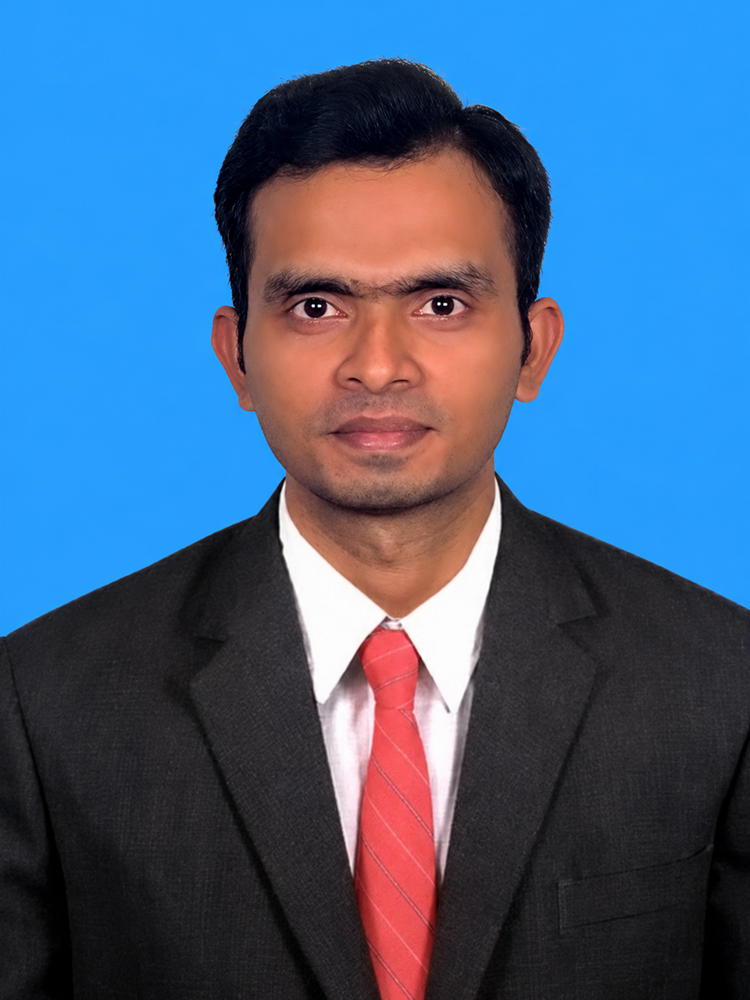

Gopi Raju MattaI am a Ph.D. scholar in the Computational Imaging Lab, Department of Electrical Engineering at IIT Madras, working under the supervision of Prof. Kaushik Mitra. I received my B.Tech. in Electronics and Communication Engineering from RGUKT IIIT Nuzvid in 2015, and my M.Tech. from IIEST Shibpur in 2017. My research lies at the intersection of computer vision, computational imaging, and computer graphics, with a focus on Neural Radiance Fields (NeRF) and 3D Gaussian Splatting (3DGS). I work on radiance field reconstruction and novel view synthesis under challenging conditions, such as lens flare and motion blur caused by camera shake, leveraging both traditional and event cameras to accurately track camera motion and recover crisp 3D scenes. |
 |
News
- [Jul 2026] Officially awarded my Ph.D. degree at the IIT Madras convocation!
- [Jul 2026] Awarded the ECCV 2026 Travel Grant (€2,000) and a full conference registration waiver!
- [Jul 2026] Successfully defended my Ph.D. thesis on Resilient Radiance Fields!
- [Jun 2026] PRISM3D accepted to ECCV 2026!
- [Oct 2025] Nighttime Flare Removal paper accepted to ICVGIP 2025!
- [Jul 2025] FlareGS accepted to ICCVW 2025!
- [May 2025] SPC to 3D accepted to ICIP 2025!
- [Dec 2024] BeSplat accepted to WACVW 2025!
- [Jul 2024] GN-FR accepted to BMVC 2024!
- [Oct 2022] Underwater Dataset & Color Restoration paper accepted to ICVGIP 2022.
Selected Publications
|
PRISM3D: Probabilistic Refinement and Robust Initialization for Physically Consistent Scene Modeling under Extreme Motion Blur
ECCV 2026
project page /
arXiv
An explicit 3D Gaussian Splatting framework utilizing deep dense tracking and probabilistic MCMC optimization to recover global scene topology and continuous Bézier trajectories under extreme motion blur. |
|
|
Gaussian Splatting from a Single Blurry Image and Event Stream
WACV Workshop 2025
project page /
arXiv
Sharp 3D scene reconstruction using a single motion-blurred image and high-temporal-resolution event streams via 3D Gaussian Splatting. |
|
|
GN-FR: Generalizable Neural Radiance Fields for Flare Removal
BMVC 2024
project page /
arXiv
Multi-view optical flare removal using generalizable NeRFs with unsupervised flare-occupancy masking and view-guided ray sampling. |
Honors & Awards
- ▪ Awarded the ECCV 2026 Travel Grant (€2,000) and a full conference registration waiver.
- ▪ Core Researcher, ICSR Exploratory Research Grant (₹6.81 Lakhs INR) — Project on "Wide Field-of-view and Dense 3D Reconstruction of Underwater Archeological Sites," selected from the top 30% of 95 proposals.
- ▪ Selected for the competitive 6-year integrated Gifted Rural Youth Program by the AP Government.
- ▪ First Rank in B.Tech (ECE) at RGUKT Nuzvid; Second Rank in M.Tech (ETCE) at IIEST Shibpur.
- ▪ Qualified National Eligibility Test (JRF-NET 2014) and Graduate Aptitude Test in Engineering (GATE AIR 1352, ECE 2016).
Industry Demos & Invited Pitches
- ▪ Meta Reality Labs — Delivered interactive demonstration on "Robust 3D Reconstruction under Severe Optical and Temporal Degradations" directly to the Director of Product Management during partnership review at IIT Madras.
- ▪ Dolby Laboratories (Advanced Technology Group) — Presented real-time flare removal (FLAVORS) and blur-robust 3D reconstruction (PRISM3D) workflows directly to the Director of Sight Lab during ATG leadership visit at IIT Madras.
- ▪ Samsung R&D Institute India (SRI-B) — Delivered technical research pitch on "Resilient Radiance Fields for Immersive XR Environments" to Senior Director and Head of XR Interactions.
Academic Service & Peer Review
- ▪ Conference Reviewer: Indian Conference on Computer Vision, Graphics and Image Processing (ICVGIP 2023, 2024).
- ▪ Assisted Peer Review (Sub-Reviewer): Contributed to peer review for 15+ submissions across flagship AI and vision venues including CVPR, ICCV, ECCV, NeurIPS, WACV, AAAI, ICCP, and IEEE Transactions (IEEE TCI, IEEE OJSP).
Recorded Talks
- ▪ EE Research Scholars Symposium Talk — Curated speaker presenting doctoral advances in NeRFs and 3DGS (IIT Madras, 2025).
- ▪ HDR Tone Mapping Guest Lecture — Invited lecture for Computational Photography curriculum (IIT Madras, 2024).
Teaching & Research Mentorship
- ▪ Research Mentorship (IIT Madras): Supervised and mentored 15+ students (M.Tech, B.Tech, Dual-Degree, and Research Interns) on computational imaging and 3D computer vision research projects.
- ▪ Lab & GPU Cluster Coordinator: Coordinated daily operational workflows, server configurations, and procurement logistics for high-performance NVIDIA RTX 6000 ADA GPU systems across a 30-member research lab.
- ▪ Lead Teaching Assistant: Directed course operations and guided deep learning vision projects for Modern Computer Vision (EE5178) and Computational Photography. Managed operational infrastructure for ~250 students and 20–30 TAs in core curricula.
- ▪ Faculty: Learning Room for CBSE X & XI Mathematics (2023–Present).